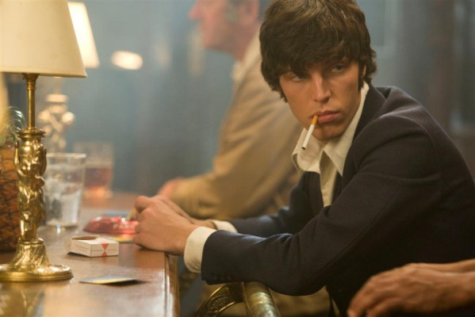
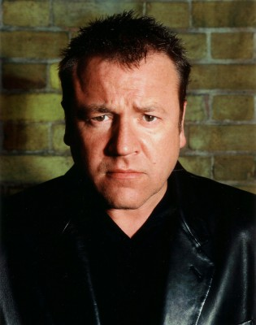
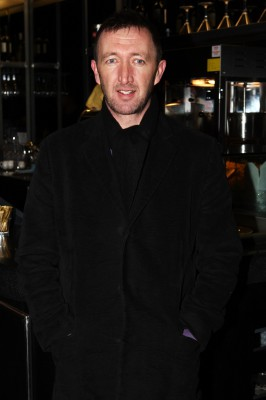
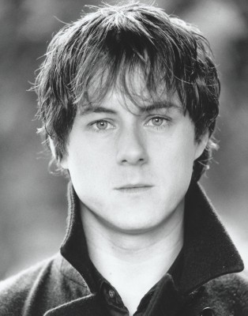
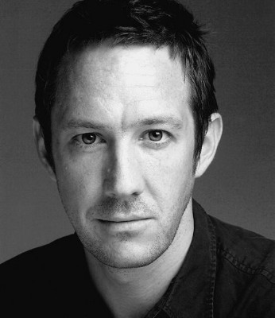

#4514 Sex & Drugs & Rock & Roll

 IMDB-Wertung: 6.6 / 10
IMDB-Wertung: 6.6 / 10  Metascore: 0
Metascore: 0 
Die Blockheads stehen mit ihrem Frontmann Ian Dury (Andy Serkis) auf der Bühne. Der Rockstar erzählt in seinen Liedern seine Lebensgeschichte: Der seit früher Kindheit an der Kinderlähmung Polio erkrankte Künstler versucht sich in den 60ern ohne Erfolg an einer Rockerkarriere. Nach der Auflösung seiner Band trifft er die schöne Denise (Naomie Harris), die ihm neuen Halt im Leben gibt, und den jungen Musiker Chaz Jankel (Tom Hughes), der zu seinem kreativen Partner wird. Mit ihm nimmt er die Gründung einer neuen Band in Angriff. Durys Frau Betty (Olivia Williams) überlässt ihm unterdessen den gemeinsamen Sohn Baxter (Bill Milner) zur Aufsicht, um ihn an seine vernachlässigen Vaterpflichten zu erinnern. Einschübe erzählen dazu von Durys Beziehung zu seinem eigenen Vater (Ray Winstone) und von den Auseinandersetzungen mit dem Aufseher (Toby Jones) im Heim für behinderte Kinder.
Jahr: 2010
Dauer: 115 Minuten
FSK:
Land: England Studio: SquareOne EntertainmentTonspuren: DTS - ,
Untertitel: Deutsch,
Auflösung: 1080p (1920x1040) Größe: 10086 MB
Genre: Biographie, Drama, Musik
Regisseur: Mat Whitecross
Drehbuch: Heinrich Harrer
Soundtrack:
Darsteller:
 Andy Serkis als Ian Dury
Andy Serkis als Ian Dury-  Tom Hughes als Chaz Jankel
- Clifford Samuel als Charlie Charles
- Joseph Kennedy als Davey Payne
- Arthur Darvill als Mick Gallagher
- James Jagger als John Turnbull
 Mackenzie Crook als Russell Hardy
Mackenzie Crook als Russell Hardy Olivia Williams als Betty Dury
Olivia Williams als Betty Dury Sam Spruell als Kilburns' Drummer
Sam Spruell als Kilburns' Drummer- Bill Milner als Baxter Dury
 Naomie Harris als Denise Roudette
Naomie Harris als Denise Roudette- Charlotte Beaumont als Jemima Dury
-  Ray Winstone als Bill Dury
 Toby Jones als Hargreaves
Toby Jones als Hargreaves-  Ralph Ineson als The Sulphate Strangler
-  Andrew Knott als Reporter
 Luke Evans als Clive Richards
Luke Evans als Clive Richards Noel Clarke als Desmond
Noel Clarke als Desmond-  Alan McKenna als Policeman
- Poppy Miller als Carer
 Michael Maloney als Graham
Michael Maloney als Graham- Kenton Hall als Punk , uncredited
- Henry Leroy-Salta als One Eyed Billy , uncredited
- David Lyddon als Daemon , uncredited
- Celeste Octavia als BILLY , uncredited
- Paul Van Beaumont als Crowd , uncredited
- Shakraj Soornack als Norman Watt-Roy
- Julian Cox als Kilburns' Bass
- Nick Rowson als Kilburns' Guitar
- Wesley Nelson als Young Ian Dury
- Ross Boatman als Pub Landlord
- Msimisi Dlamini als Kilburns' Drums
- Sabrina Jones als Kid at Birthday Party
- Ruby Ashbourne Serkis als Kid at Birthday Party
- Sonny Ashbourne Serkis als Kid at Birthday Party
- Marc Lambert-Clark als Catshit Drummer
- Georgina Edewor-Thorley als Party Girl
- Cassie Edewor-Thorley als Party Girl
- Ian Neil als Photographer
- Joe Siffleet als Bully Boy
- Giuseppe Circelli als Fan
- Ferdy Roberts als Teacher
- Hamish Thompson als Child At Chailey
- Cortez Nelson als Young Boy 2
- Mark Arends als (uncredited
- Dom Arresthead als Extra , uncredited
- Chloe Arrowsmith als Girl in bed with The Blockheads Charley , uncredited
- Catherine Balavage als Crazy Drug Girl , uncredited
- Jennifer Carswell als Ruby , uncredited
- Ellie Jeffreys als Denise's Friend , uncredited
Datei: X:\2010(N-Z)\Sex & Drugs & Rock & Roll (2010, FSK, 1920x1040).mkv seit 04.10.2016
Festplatte: HD 2010(G-Z)-2011(A-F)
 Es gibt insgesamt 115 Filme in der Gruppe '2010(N-Z)'
Es gibt insgesamt 115 Filme in der Gruppe '2010(N-Z)'